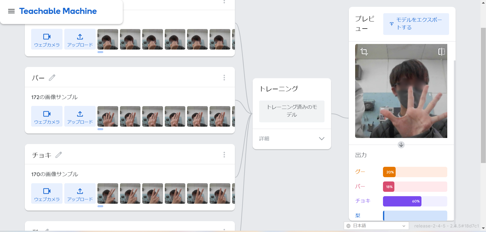

第2週目
2-1 １週目のレポートをHTMLで作る
１週目のレポート
1.内容
1週目の実習で学んだことをレポートとして書き上げる。
2.感想
レポートをhtmlを使用して書き上げることは初めてで、よくわからない文字がとても多く並んでいたので、
「どこをどのように編集すればよいのか」ということを理解するのにかなり時間がかかった。
また、ウェブへの反映に時間がかかったので、レポートの見た目などの最終調整にとても時間がかった。
2-2 機械学習体験

1.内容
Teachable MachineというAIを通して、機械学習の手順と仕組みを知る。
2.感想
私はこの実習を受ける以前、「AIは自身で考えて学ぶ」という大雑把な知識しかなかったので、
AIが作動する手順を深く知ることができて興味深く感じた。
そして、私がカメラの前で「グー」「チョキ」「パー」の仕草をすると、驚くほど高精度にAIが読み取るので、思わず圧巻された。
2-3 VR（バーチャルリアリティー：Virtual Reality）の体験
1.内容
MetaQuest2というVRゴーグルを通して、実際のVRの世界を体験してみる。
2.感想
かんそうかんそう